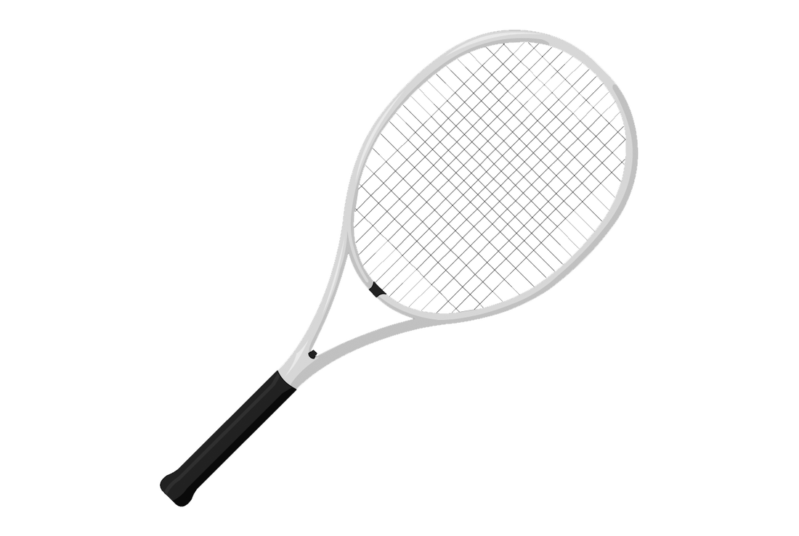

לי קוראים ניר, שם שלדעתי מתאר אותי מצוין. המשמעות המילונית של "ניר" היא שדה חרוש, אך המשמעות בשבילי רחבה הרבה יותר. שדה חרוש הוא שדה שמוכן לזריעה, שדה שמחכה בקוצר רוח שישקו אותו בזרעים חדשים. במקביל לכך, אני חושב שאני אדם סקרן שתמיד שמח להעשיר את הידע שלו. דבר זה מתחבר עם החיבה שלי לאתגרים והביא להחלטות רבות ודרכים רבות שבחרתי, אשר עיצבו את האישיות שלי עד היום.
ניר
לדוגמה, כבר בכיתה ב התחלתי לשחק טניס. אני רואה בטניס את הספורט המיטבי, ולדעתי המעניין ביותר כיום. אני אוהב טניס בכל דרך אפשרית, ממה שקרה בעבר, דרך צפייה במשחקים והתעדכנות בטניס היום, וכמובן, השיא הוא לשחק טניס בעצמי. במהלך השנים השתתפתי במספר תחרויות קטנות, רק בשביל האתגר ולא בשביל לנסות ולהיות שחקן מקצועי ותחרותי, ואף זכיתי בחלקן.

אתגר נוסף שלקחתי על עצמי בשנתיים האחרונות הוא התוכנית לנוער מוכשר במתמטיקה. כיום, אני בשנה השלישית (מתוך שלוש) בתוכנית ובסוף השנה אני מתכנן ומקווה לסיים את הבגרות 5 יחידות במתמטיקה. תוכנית זו דורשת השקעה רבה, ולדעתי קשה מאוד להצליח בה ללא הסקרנות והרצון לדעת וללמוד.
1+1